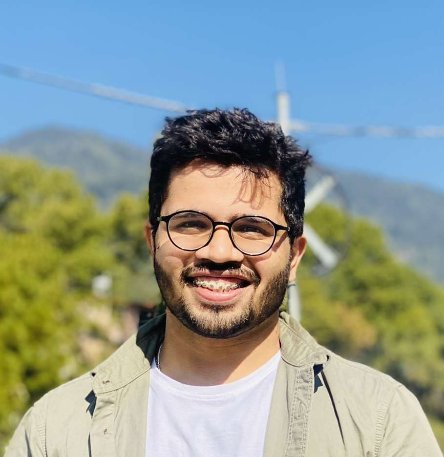

My Homepage
|

|
Ayush Surana
3rd Year Undergraduate Student
Chemical Engineering Department
IIT Kharagpur
Contact Numer: +918602090470 |
Email id: ayushsurana3@gmail.com |
LinkedIn
| GitHub
|
Introduction
I am a third year undergraduate student of the department of Chemical
Engineering enrolled in it's B.Tech course. I like to apply my technical
skills, accrued from my engineering studies to conflux the spheres of
technology and innovation.
During my undergraduate courses so far, I have outlined certain specific
goals to help me grow holistically. The primary ones among these are to
get an experience of the corporate world, an exposure in the field of
artificial intelligence, and machine learning along with developing a
network of intellectuals.
Whether it is academics or management, challenging real-life
problem-solving always attracts me. In the quest to expand my horizons, I
have constantly aimed at pursuing diverse interests, and thereby, in
addition to academic proficiency, I have inculcated in myself leadership
and management skills through the numerous position of responsibilities
that I have undertaken.
Education
-
Bachelor of Technology in Chemical Engineering
Indian Institute of Technology, Kharagpur
CGPA- 9.09
July 2019- Present
-
Higher Secondary Certificate
Central Board of Secondary Education
Percentage- 91.8%
April 2018- May 2019
-
Secondary School Certificate
Central Board of Secondary Education
CGPA- 10
April 2016- May 2017
Internships
Kaafi Services Private Limited | Product Manager | September 2021 -
November 2021
-
Planned new features and carried out its private launch in 2 mega cities
and managed the marketing
-
Created the target audience database (1000+ consumers), analysed their
feedbacks and upgraded the product
-
Communicated with internal teams and Stakeholders, examined different
issues and conceived new features
Institute of Business and Technology | Czech Republic | Research Intern |
May 2021 - July 2021
ER-AI: Economic Review using AI(Advisor: Professor Marek Vochozka
-
Objective: Developing an Information Retrieval System to get summarized
information on customized user input
-
Designed an automated web extractor for extraction of abstracts through
Web of Science using Selenium WebDriver
-
Deployed transformer-based models such as BERT, ERNIE as transfer
learning for text classification and abstract analysis
-
Tuned the Hyperparameters of models and achieved an accuracy of 91% on
multi-class text-based classification
-
Implemented a Text-to-Text transfer transformer as a summarizer to give
an abstract summary of the input topic
-
Modeled to reduce the average reading time of abstracts of research
paper by 25% when compared to manual process
Center of Excellence in Artificial Intelligence | IIT Kharagpur |
Research Intern | December 2020 - December 2020
Deep Learning Based Covid-19 time-series prediction (Advisor: Professor
Adway Mitra)
-
Objective: Prediction of daily Covid-19 cases across 182 countries using
OxCGRT data through regression
-
Implemented a single feature LSTM model using Keras and Tensorflow to
predict daily Covid-19 cases across countries
-
Identified and analysed the correlation between phase-change and various
socio-economic intervention policies
-
Deployed the novel Knee Detection Algorithm to classify the time-series
data into 3 phases based on the rise of cases
-
Improved the baseline model by designing three phase-specific LSTMs
based on different datasets with the rise in cases
Projects
Kharagpur Winter of Code | IIT Kharagpur | Student Developer | December
2020 - December 2020
-
Designed a Stock Price Predictor for stocks in Indian equity market
using the LSTM model with an 𝑅2 score of 0.925891
-
Applied various models such as Logistic Regression for Sentiment
Analysis of tweets with a best F1 score of 0.81342
-
Trained Random Forest Classifier on an imbalanced dataset of Credit Card
Fraudulent Detection with accuracy 0.99961
Kaggle | Self‑Project ‑ House Prices: Advanced Regression Techniques |
September 2020 - September 2020
-
Modeled a regression problem to predict sales price for each house using
various regression techniques
-
Performed feature engineering by drawing inferences from plots, followed
by the application of lasso and ridge regression
-
Attained an RMSE score of 0.132 on the obtained lasso model between the
logarithm of predicted value and actual sales price
Competitions
Open IIT Data Analytics Competition | Technology Students Gymkhana | IIT
Kharagpur | March 2021
-
Objective: Revenue Maximization of a Company in the bidding process
through popularity prediction of music
-
Worked on multi‑class classification problem to predict the popularity
of music, using novel two‑stage classification approach
-
Carried out feature engineering by drawing inferences from plots,
followed by feature reduction using HeatMap
-
Achieved a prediction accuracy of 81% by applying ensemble methods using
various models such as SVM, Random Forest
Open IIT Case Study Competition | Technology Students Gymkhana | IIT
Kharagpur | April 2021
-
Ranked as the 4th best team overall and received the best cumulative
score by two of the three judges among all teams
-
Analysed problems in the current supply chain systems and proposed
solutions for optimisation through inventory management
-
Ideated AI-based techniques for optimal route computation, inventory
space management and quality control
-
Employed demand forecasting techniques, which had a predicted impact of
reducing 30-50% error reduction in supply chain
Position of Responsibility
Kshitij 2021 | Technology Students Gymkhana | IIT Kharagpur | Core Team
Member | August 2020 - March 2021
-
Member of the Core Organizing Team responsible for handling Publicity,
Corporate and Alumni relations with FTR Events
-
Secured an individual net sponsorship amount and alumni contribution
worth INR 2.91 lakhs from the region of Bangalore
-
Collaborated with National and International organizations and conducted
virtual exhibition during the fest
-
Successfully managed Sandrover and Source Code events, witnessing the
highest ever participation of over 2000 participants
-
Associated with 7 online media firms as online media partners for online
publicity of events in the fest
Kharagpur Data Analytics Group | Students Activities Chair, IEEE
Kharagpur | IIT Kharagpur | Member | August 2020 - April 2021
-
Responsible for raising awareness and bringing Data Analytics and
Machine Learning enthusiasts together in a single society
-
Successfully Organized Kharagpur Data Science Hackathon in association
with Airtel, with the participation of 230+ teams
-
Conducted a Python: For Data Science Workshop for IIT Kharagpur Freshers
with 100+ participants
180 Degree Consulting | IIT Kharagpur | Consultant | August 2020 - March
2021
-
Member of the Client Acquisition and Strategy team responsible for the
acquisition of clients for the organization
-
Developed a sustainable model for a sewing centre for an NGO which
focuses on women empowerment
-
Researched and provided insights on best teaching practices in India and
across the globe for ESL students to the client
-
Organized a Product Case Competition in collaboration with PM School
with 100+ teams registration
Awards and Achievements
-
Secured a department change by being within the top 8% of a student
population of over 1600 at the end of the first year
-
Recipient of prestigious merit cum means scholarship awarded by the GOI
based on continuous academic excellence
Skills and Expertise
-
Programming Languages:C/C++ (Proficient), Python(Familiar),
JAVA(Familiar)
-
Library and Tools:numpy, pandas, sklearn, matplotlib, seaborn,
Jupyter Notebook, Google Colab, MS Excel, Anaconda
-
University Course:Machine Learning | Probability and Statistics |
Programming and Data Structure
-
MOOCs:Machine Learning | Neural Network and Deep Learning |
Improving Deep Neural Network | Sequence Models | Getting Started with
Python | Statistics 110: Probability | Data Structure And Algorithm
Extra Curricullar Activities
-
Social: Volunteered in various weekly activities conducted by
National Service Scheme, for social welfare, in nearby villages
-
Cultural: Worked in Design Team of Rajendra Prasad Hall of
Residence and secured GOLD in Illumination in the year 2019